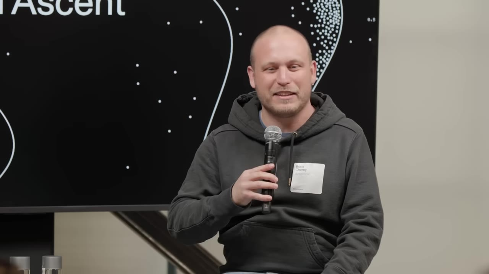
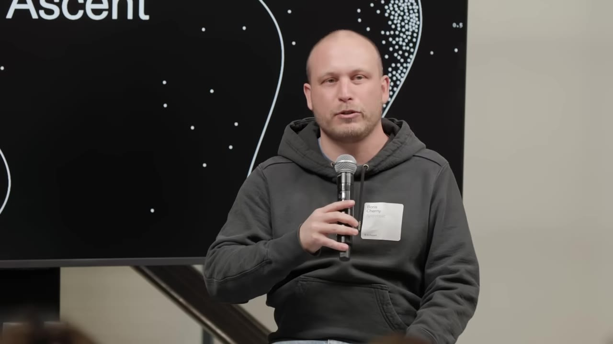
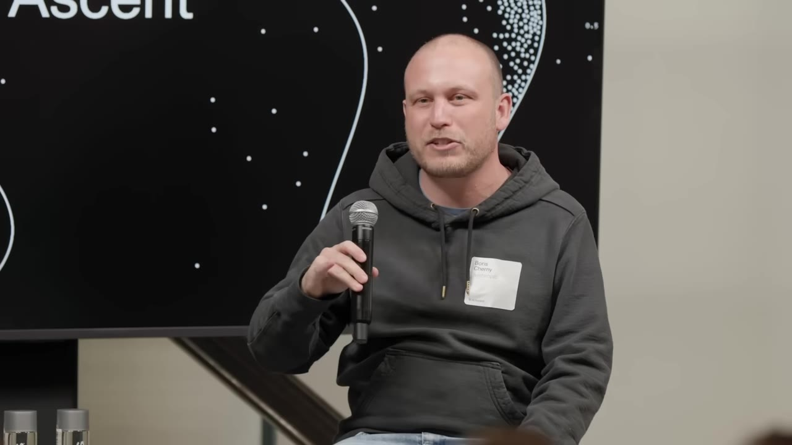
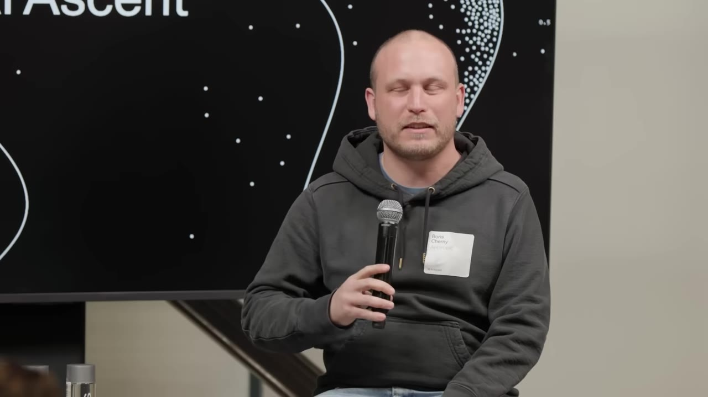
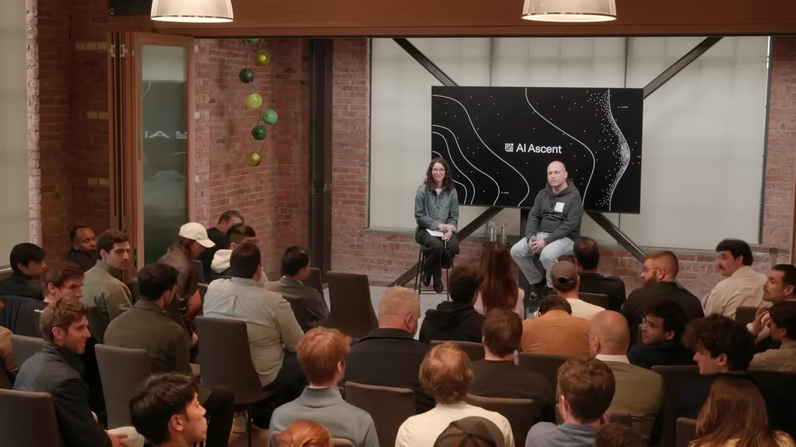
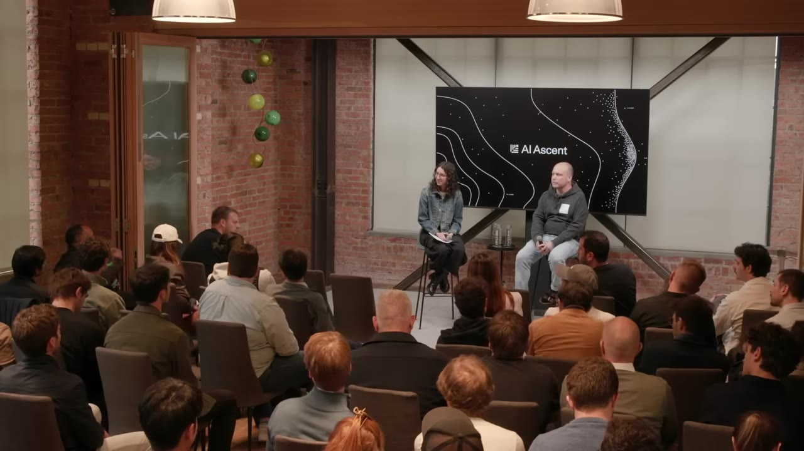
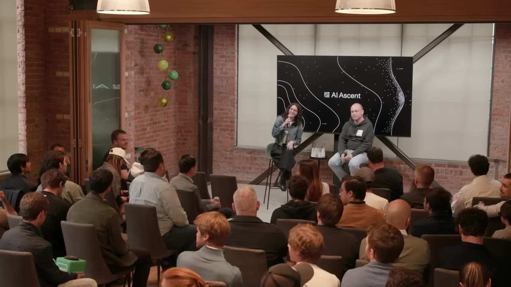

The creator of Claude Code on how the product got built by accident, why he considers coding "solved," and why the next 10 years will bring 10x the startups.
Watch on YouTubeClaude Code didn't start as a product — it started as an incubator bet. Boris joined Anthropic Labs, a short-lived innovation team, in late 2024 with a sense that the models were "almost ready" for the next step beyond type-ahead completions. The team built Claude Code, MCP, and the desktop app, then disbanded. It was barely usable for six months.

There's this idea that the model can do all the stuff that no product has yet captured.— Boris Cherny
Sometime in October–November last year, the model wrote 100% of Claude Code's own codebase. Today, Boris writes zero lines himself — just reviews and submits dozens of PRs daily, with a record of 150 in a single day. He built the codebase in TypeScript and React not because they're ideal, but because they were "very on distribution for the model" when it started.

For me today, the model writes 100% of my code. I write somewhere — usually a few dozen PRs every day.— Boris Cherny
Most of Boris's work now happens on his phone, in the Claude app. He runs 5–10 concurrent sessions with a few hundred agents in flight, and thousands more each night. His favorite tool is /loop — cron-scheduled jobs that run every minute, every hour, every day. He has dozens of them: babysitting PRs, fixing flaky CI tests, clustering Twitter feedback.

If you haven't experimented with it, highly recommend it. Loops are the future at this point.— Boris Cherny
On Boris's team, everyone writes code — engineering manager, product manager, designers, data scientist, finance person, user researcher. Not just engineers who can do iOS + web + server. The shift is toward generalists who span disciplines: engineers who are also great at design, or product and data science and engineering.

Everyone on our team codes. They're specialists in something, but now everyone's just coding.— Boris Cherny
Boris references Hamilton's "seven powers" from the Acquired podcast. Two of them — switching costs and process power — get weaker with AI. Claude 4.7 can now "hill climb anything" given a target. But the other powers — network effects, scale economies, cornered resources — are untouched by AI.

Over the same period, the cost of a book went down like 100x. Software is about to get the same treatment.— Boris Cherny
Internally, Claude Code uses the same models everyone else does — Mythos for testing, Opus 4.7 for dogfooding. "We have no more manually written code anywhere at the company. All of the SQL is written by models." The gap isn't technology — it's organizational. The hardest part of AI-native work is changing how teams operate, and startups can do that from day one.

We talk to people at Anthropic — we use Claude for literally everything. Our Claudes are talking all day as my Claudes are coding in a loop, they communicate over Slack to talk to other people's Claudes.— Boris Cherny
Boris compares the current moment to the printing press in the 1400s: before it, ~10% of Europeans were literate; within 50 years, more literature was published in Europe than in the prior thousand years. Over centuries, literacy climbed to ~70%. Software will follow a similar — but faster — arc.

I think it's going to be a skill like — I don't know — like knowing how to send a text message. Anyone can do it.:::pills label="What's next on the roadmap" - Claude Design — already good, getting much better - Claude Code — new features landing in the coming weeks - Massive parallelization — loops, batch, teams getting better - Computer use — the catchall for systems without MCPs— Boris Cherny
:::